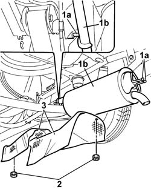
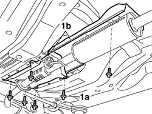
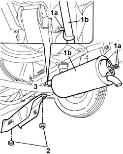
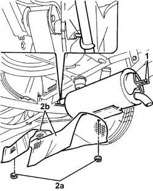

1076A40 exhaust pipe heat shield - r r
- Path
- Procedures > 10 ENGINE > 1076 EXHAUST PIPES AND SILENCERS > 1076A exhaust pipe fastenings and protections > 1076A40 exhaust pipe heat shield - r r
- Kind
- repair procedure (removal / refitting; the operation number is the code)
- Applies to
- all engines; all production periods
- Interactive page
- https://sloeber94.github.io/elrnDB-fDbl/en/#/2584263
Applies to: engines: 1.2 8v; all production periods
 Removing
Removing
 Refitting
RefittingPlace the car on a ramp.
1. Remove the bearings (1a) for the rear silencer (1b) and the rigid section of pipe from the rubber mountings on the bodyshell, then lower the rear section of the pipe.
2. Undo the nuts fixing the heat shields to the bodyshell.
3. Remove the two heat shields for the exhaust pipe.

Applies to: engines: 1.2 8v; all production periods
Refitting
RemovingFit the rear heat shields for the exhaust pipe and tighten the fixing nuts.
Fit the rear silencer bearings and the rigid section of pipe to the rubber mountings on the bodyshell.
Remove the vehicle from the ramp.
Applies to: engines: 1.4 8v, 1.6 16v; all production periods
Removing
RefittingPlace the car on a lift.
1. Undo fasteners (1a) and disconnect the catalytic converter ( 1b) from the front section of exhaust pipe.

Applies to: engines: 1.4 8v, 1.6 16v; all production periods
1. Remove the bearings (1a) for the rear silencer (1b) and the rigid section of pipe from the rubber mountings on the bodyshell, then lower the rear section of the pipe.
2. Undo the nuts securing the rear heat shields to the bodyshell.
3. Remove the two rear heat shields for the exhaust pipe.
Applies to: engines: 1.4 8v, 1.6 16v; all production periods
Refitting
RemovingFit the rear heat shields for the exhaust pipe and tighten the fixing nuts.
Fit the rear silencer bearings and the rigid section of pipe to the rubber mountings on the bodyshell.
Fit the front heat shields and tighten the fasteners to the body.
Remove the vehicle from the ramp.
Applies to: engines: 1.3 JTD 16V; all production periods
Removing
RefittingPlace the car on a lift.
1. Remove the bearings (1a) for the rear silencer (1b) and the rigid section of pipe from the rubber mountings on the bodyshell, then lower the rear section of the pipe.
2. Undo the nuts securing the rear heat shield to the bodyshell.
3. Remove the rear heat shield for the exhaust pipe.

Applies to: engines: 1.3 JTD 16V; all production periods
Refitting
RemovingFit the rear heat shield for the exhaust pipe and tighten the fixing nuts.
Fit the rear silencer bearings and the rigid section of pipe to the rubber mountings on the bodyshell.
Remove the vehicle from the lift.
Applies to: engines: 1.9 DIESEL; all production periods
Removing
RefittingPlace the car on a ramp.
1. Remove the bearings (1a) for the rear silencer (1b) and the rigid section of pipe from the rubber mountings on the bodyshell, then lower the rear section of the pipe.
2. Undo the nuts fixing the heat shields to the bodyshell.
3. Remove the two heat shields for the exhaust pipe.
Applies to: engines: 1.9 DIESEL; all production periods
Refitting
RemovingFit the rear heat shields for the exhaust pipe and tighten the fixing nuts.
Fit the rear silencer bearings and the rigid section of pipe to the rubber mountings on the bodyshell.
Remove the vehicle from the ramp.
Applies to: engines: 1.9 JTD 8V; all production periods
Removing
RefittingPosition the vehicle on the ramp.
1. Release the rear exhaust silencer and rear catalytic converter section from the flexible mounting blocks.
2. Undo the nuts (2a) and remove the exhaust pipe heat shield (2b).

Applies to: engines: 1.9 JTD 8V; all production periods
Refitting
RemovingRefit the exhaust pipe heat shields in their seatings and fix them with the nuts.
Connect the rear exhaust silencer and rear catalytic converter section to the flexible mounting blocks.
Remove the car from the ramp.